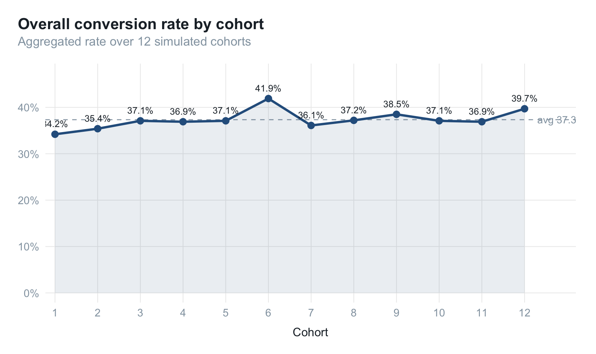
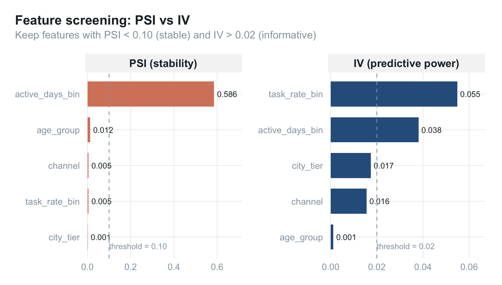
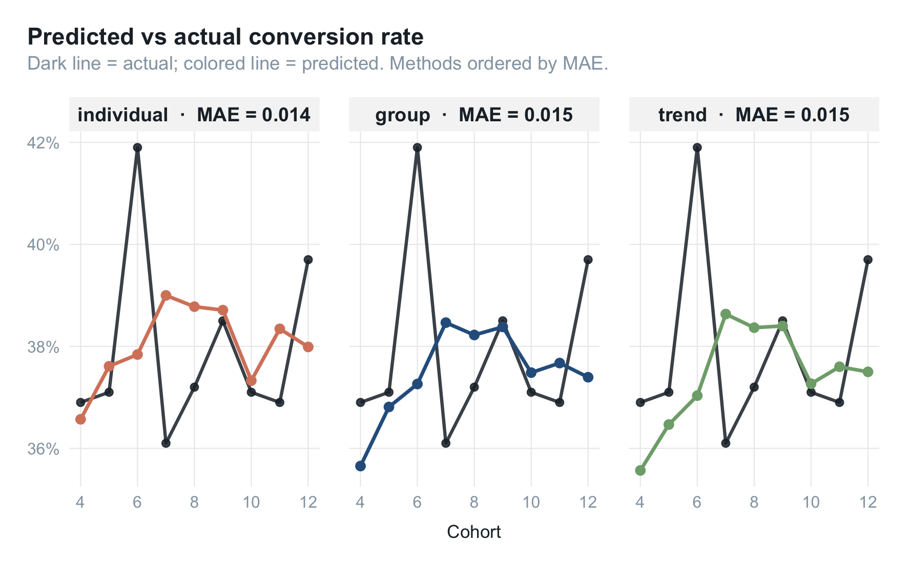
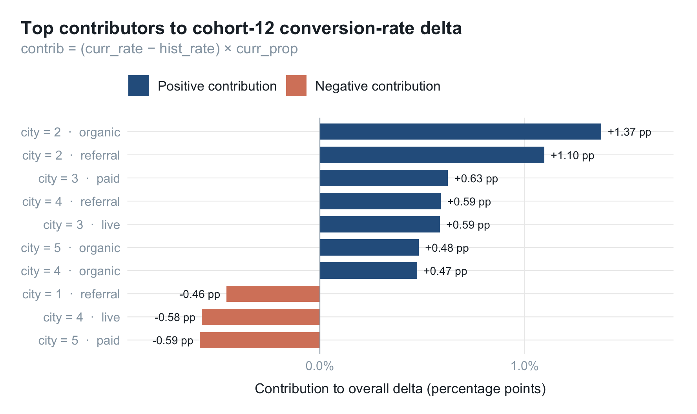
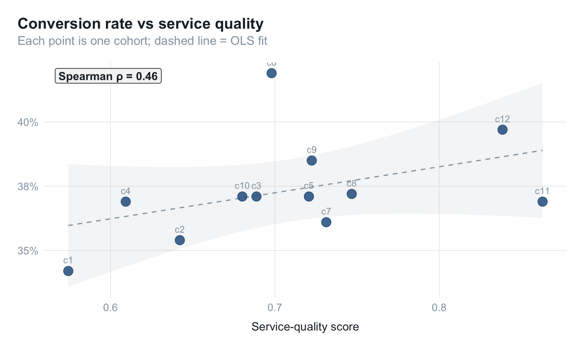

转化率预测：分群方法、特征筛选与可解释归因
在订阅、续费、复购这类业务里，运营和市场常问的问题是：
“这一批刚进来的用户，最终能续多少？”
预测的难点不在"算出一个数字"，而在两件事：
- 可解释：预测结果要能告诉业务侧"为什么是这个数"；
- 可归因：当预测偏离实际时，能定位误差来自哪部分人群、哪部分服务环节。
本文整理一套面向当期转化率的预测与归因方法，覆盖三类思路的对比、特征筛选标准、模型评估，以及偏差出现时如何拆解原因。
模拟数据
构造一个跨多个周期（cohort）的订阅用户样本，每个用户带几个可观测特征和一个转化标签：
library(tidyverse)
library(glmnet)
set.seed(42)
simulate_users <- function(cohort_id, n = 1000) {
city_tier <- sample(1:5, n, replace = TRUE,
prob = c(0.15, 0.25, 0.25, 0.20, 0.15))
age_group <- sample(1:6, n, replace = TRUE)
channel <- sample(c("paid", "organic", "referral", "live"),
n, replace = TRUE)
active_days <- pmax(0, round(rnorm(n, mean = 15 + 0.3 * cohort_id, sd = 5)))
task_rate <- pmin(1, pmax(0, rnorm(n, mean = 0.55, sd = 0.2)))
# 潜在转化概率：隐藏的真实因果结构
logit_p <- -2 +
0.30 * (city_tier <= 2) +
0.20 * (channel == "referral") -
0.15 * (channel == "paid") +
0.04 * active_days +
1.20 * task_rate
p <- 1 / (1 + exp(-logit_p))
tibble(
cohort_id, city_tier, age_group, channel,
active_days, task_rate,
converted = rbinom(n, 1, p)
)
}
df <- map_dfr(1:12, simulate_users)
整个数据集包含 12 个周期、每期 1000 个用户。先看一下各期的转化率走势：
trend_df <- df |>
group_by(cohort_id) |>
summarise(rate = mean(converted), .groups = "drop")
grand_mean <- mean(trend_df$rate)
ggplot(trend_df, aes(cohort_id, rate)) +
geom_hline(yintercept = grand_mean,
color = palette_blog["ash"], linetype = 2, linewidth = 0.4) +
annotate("text", x = 12.3, y = grand_mean,
label = sprintf("avg %.1f%%", grand_mean * 100),
hjust = 0, vjust = 0.5,
color = palette_blog["ash"], size = 3.2) +
geom_area(alpha = 0.10, fill = palette_blog["blue"]) +
geom_line(color = palette_blog["blue"], linewidth = 1) +
geom_point(color = palette_blog["blue"], size = 2.4) +
geom_text(aes(label = sprintf("%.1f%%", rate * 100)),
vjust = -1.1, size = 2.9,
color = palette_blog["ink"]) +
scale_x_continuous(breaks = 1:12,
expand = expansion(mult = c(0.02, 0.08))) +
scale_y_continuous(labels = scales::percent_format(accuracy = 1),
expand = expansion(mult = c(0.05, 0.18))) +
labs(
x = "Cohort",
y = NULL,
title = "Overall conversion rate by cohort",
subtitle = "Aggregated rate over 12 simulated cohorts"
) +
theme_blog()

整体随活跃度（active_days 的均值跟 cohort_id 正相关）小幅上行，但单一时序看不出结构性差异。
三类预测思路
记 $R_t$ 为时刻 $t$ 的当期转化率。三种思路：
| 方法 | 公式 | 特点 |
|---|---|---|
| 全局预测 | $R_t = c + \sum_{i=1}^{p} \phi_i R_{t-i} + \epsilon_t$ | 单变量时序，捕捉整体周期 |
| 分群预测 | $R_t = \sum_{g=1}^{k} p_g R_{t_g}$ | 多变量，可解释、可归因 |
| 个体预测 | $R_t = \frac{1}{N}\sum_{i} R_{t_i},\ R_{t_i}=P(y=1 \mid X)$ | 多变量，逐人打分 |
其中 $p_g$ 是群体 $g$ 的占比，$R_{tg}$ 是群体 $g$ 的转化率，$R_{ti}$ 是用户 $i$ 的转化率。
直觉上三者各有侧重：
- 时序模型擅长"季节性"；
- 个体模型擅长"打分排序"；
- 分群模型擅长"解释结构"。
哪个更适合聚合指标的预测，要看数据。下面用滚动窗口（前 3 期训练、第 t 期预测）跑一遍。
全局预测（滚动均值）
hist_rate <- df |>
group_by(cohort_id) |>
summarise(rate = mean(converted), .groups = "drop")
trend_predict <- function(rates, t, window = 3) {
mean(rates[(t - window):(t - 1)])
}
trend_forecast <- map_dbl(4:12, \(t) trend_predict(hist_rate$rate, t))
分群预测
把每个用户落入一个分群单元（特征的笛卡尔积），每期预测 = 历史同分群转化率 × 当期分群占比：
group_predict <- function(df, target_t, hist_window = 3) {
hist <- df |>
filter(cohort_id >= target_t - hist_window, cohort_id < target_t) |>
group_by(city_tier, channel) |>
summarise(hist_rate = mean(converted), .groups = "drop")
curr <- df |>
filter(cohort_id == target_t) |>
group_by(city_tier, channel) |>
summarise(n_user = n(), .groups = "drop") |>
mutate(curr_prop = n_user / sum(n_user))
curr |>
left_join(hist, by = c("city_tier", "channel")) |>
summarise(pred = sum(hist_rate * curr_prop, na.rm = TRUE)) |>
pull(pred)
}
group_forecast <- map_dbl(4:12, \(t) group_predict(df, t))
个体预测
individual_predict <- function(df, target_t, hist_window = 3) {
train <- df |>
filter(cohort_id >= target_t - hist_window, cohort_id < target_t)
test <- df |>
filter(cohort_id == target_t)
fm <- converted ~ city_tier + age_group + factor(channel) +
active_days + task_rate - 1
x_train <- model.matrix(fm, train); y_train <- train$converted
x_test <- model.matrix(fm, test)
fit <- cv.glmnet(x_train, y_train, family = "binomial", alpha = 0.5)
mean(as.numeric(predict(fit, x_test, type = "response", s = "lambda.min")))
}
indiv_forecast <- map_dbl(4:12, \(t) individual_predict(df, t))
特征工程
编码：把连续特征切成可解释的三档
为了让特征本身就带业务含义，对每个候选特征按历史转化意向做卡方分桶（ChiMerge），切成 0 高 / 1 中 / 2 低 三档。手写一个简单版本：
encode_by_target <- function(feature, target, n_bins = 3) {
rate_by_level <- tapply(target, feature, mean)
ranks <- rank(-rate_by_level, ties.method = "first")
bin <- cut(ranks, breaks = n_bins, labels = 0:(n_bins - 1)) |>
as.character() |> as.integer()
setNames(bin, names(rate_by_level))
}
encode_by_target(df$city_tier, df$converted)
## 1 2 3 4 5
## 0 0 2 1 2
这样做的好处是：后续不管走哪种模型，特征本身已经"自带解释"——city_tier=0 直接就是"历史转化率最高的那一档城市"。
筛选：PSI + IV 双指标
特征上线前需要回答两个问题：够稳吗？够有用吗？
稳定性 — PSI（Population Stability Index）
$$ \text{PSI} = \sum_{i=1}^{n} (A_i - E_i), \ln!\left(\frac{A_i}{E_i}\right) $$
psi <- function(expected, actual, eps = 1e-6) {
e_dist <- prop.table(table(expected))
a_dist <- prop.table(table(actual))
k <- union(names(e_dist), names(a_dist))
e <- as.numeric(e_dist[k]); e[is.na(e)] <- eps
a <- as.numeric(a_dist[k]); a[is.na(a)] <- eps
sum((a - e) * log(a / e))
}
经验阈值：
- PSI < 0.1：稳定；
- 0.1 ≤ PSI < 0.25：需关注；
- PSI ≥ 0.25：建议重新校准。
预测力 — IV（Information Value）
$$ \text{IV} = \sum_{i=1}^{n} (P_i - Q_i), \ln!\left(\frac{P_i}{Q_i}\right) $$
iv <- function(feature, target, eps = 1e-6) {
tbl <- table(feature, target)
pos <- tbl[, "1"] / sum(tbl[, "1"])
neg <- tbl[, "0"] / sum(tbl[, "0"])
pos[pos == 0] <- eps; neg[neg == 0] <- eps
sum((pos - neg) * log(pos / neg))
}
经验阈值：
- IV < 0.02：几乎无预测力；
- 0.02 ≤ IV < 0.1：弱；
- 0.1 ≤ IV < 0.3：中等；
- 0.3 ≤ IV < 0.5：强；
- IV ≥ 0.5：非常强。
实际筛选条件：PSI < 0.1 AND IV > 0.02。
把所有特征的 PSI（期 1 vs 期 12）和 IV（全量样本）算一遍，可视化筛选结果：
df_bin <- df |>
mutate(active_days_bin = ntile(active_days, 5),
task_rate_bin = ntile(task_rate, 5))
features <- c("city_tier", "age_group", "channel",
"active_days_bin", "task_rate_bin")
feature_table <- map_dfr(features, \(f) {
tibble(
feature = f,
psi_val = psi(df_bin[[f]][df_bin$cohort_id == 1],
df_bin[[f]][df_bin$cohort_id == 12]),
iv_val = iv(df_bin[[f]], factor(df_bin$converted))
)
})
feature_table
## # A tibble: 5 × 3
## feature psi_val iv_val
## <chr> <dbl> <dbl>
## 1 city_tier 0.00125 0.0174
## 2 age_group 0.0124 0.00111
## 3 channel 0.00461 0.0155
## 4 active_days_bin 0.586 0.0380
## 5 task_rate_bin 0.00452 0.0548
thresholds <- tibble(
metric = factor(c("PSI (stability)", "IV (predictive power)"),
levels = c("PSI (stability)", "IV (predictive power)")),
y = c(0.10, 0.02),
lbl = c("threshold = 0.10", "threshold = 0.02")
)
plot_df <- feature_table |>
pivot_longer(c(psi_val, iv_val),
names_to = "metric", values_to = "value") |>
mutate(metric = factor(recode(metric,
psi_val = "PSI (stability)",
iv_val = "IV (predictive power)"),
levels = c("PSI (stability)",
"IV (predictive power)"))) |>
group_by(metric) |>
arrange(value, .by_group = TRUE) |>
mutate(feature_label = factor(paste0(feature, "__", metric),
levels = paste0(feature, "__", metric))) |>
ungroup()
ggplot(plot_df,
aes(feature_label, value, fill = metric)) +
geom_col(width = 0.7) +
geom_text(aes(label = sprintf("%.3f", value)),
hjust = -0.15, size = 3, color = palette_blog["ink"]) +
geom_hline(data = thresholds,
aes(yintercept = y),
linetype = 2, color = palette_blog["ash"], linewidth = 0.4) +
geom_text(data = thresholds,
aes(x = 0.6, y = y, label = lbl),
hjust = 0, vjust = -0.4, size = 3,
color = palette_blog["ash"],
inherit.aes = FALSE) +
facet_wrap(~ metric, scales = "free") +
coord_flip(clip = "off") +
scale_x_discrete(labels = \(x) sub("__.*$", "", x)) +
scale_y_continuous(expand = expansion(mult = c(0.02, 0.22))) +
scale_fill_manual(values = c(
"PSI (stability)" = palette_blog[["rose"]],
"IV (predictive power)" = palette_blog[["blue"]]
)) +
labs(
x = NULL, y = NULL,
title = "Feature screening: PSI vs IV",
subtitle = "Keep features with PSI < 0.10 (stable) and IV > 0.02 (informative)"
) +
theme_blog() +
theme(legend.position = "none")

图中虚线即筛选阈值。左侧 PSI 越小越稳，右侧 IV 越大越有预测力。
模型评估：分群方法占优
actual <- hist_rate$rate[4:12]
mae <- function(pred, actual) mean(abs(pred - actual))
mae_tbl <- tibble(
method = c("trend", "group", "individual"),
mae = c(
mae(trend_forecast, actual),
mae(group_forecast, actual),
mae(indiv_forecast, actual)
)
) |> arrange(mae)
mae_tbl
## # A tibble: 3 × 2
## method mae
## <chr> <dbl>
## 1 individual 0.0144
## 2 group 0.0146
## 3 trend 0.0152
eval_long <- tibble(
cohort_id = 4:12,
trend = trend_forecast,
group = group_forecast,
individual = indiv_forecast,
actual = actual
) |>
pivot_longer(c(trend, group, individual),
names_to = "method", values_to = "pred") |>
left_join(mae_tbl, by = "method") |>
mutate(facet_label = sprintf("%s · MAE = %.3f", method, mae),
facet_label = factor(facet_label,
levels = unique(facet_label[order(mae)])))
method_colors <- c(
group = palette_blog[["blue"]],
trend = palette_blog[["sage"]],
individual = palette_blog[["rose"]]
)
ggplot(eval_long, aes(cohort_id)) +
geom_line(aes(y = actual),
color = palette_blog["ink"], linewidth = 0.9, alpha = 0.85) +
geom_point(aes(y = actual),
color = palette_blog["ink"], size = 1.8, alpha = 0.85) +
geom_line(aes(y = pred, color = method), linewidth = 1) +
geom_point(aes(y = pred, color = method), size = 2.2) +
facet_wrap(~ facet_label, ncol = 3) +
scale_x_continuous(breaks = c(4, 6, 8, 10, 12)) +
scale_y_continuous(labels = scales::percent_format(accuracy = 1)) +
scale_color_manual(values = method_colors) +
labs(
x = "Cohort", y = NULL,
title = "Predicted vs actual conversion rate",
subtitle = "Dark line = actual; colored line = predicted. Methods ordered by MAE."
) +
theme_blog() +
theme(legend.position = "none")

经验上常见的排序：
$$ \text{分群} > \text{趋势} > \text{个体} $$
直觉解释：
- 个体模型会累积误差。逐人打分再加总，每个人 1~2 个百分点的误差，叠几千人后整体偏差比直接拟合宏观量更大。
- 趋势模型缺乏结构。当人群构成发生变化（例如某个渠道占比突然涨/掉），单变量时序无法吸收。
- 分群模型最稳。它本质是"已知群体转化率 × 已知群体占比"，结构清晰、偏差容易追根溯源。
聚合指标的预测，并不总是"模型越精细越准"。
可解释：决策路径与归因
决策路径
分群预测的决策路径非常浅——只有两步：
- 计算历史 N 期的群体转化率表；
- 用当期人群占比对历史转化率做加权求和。
整个模型没有黑盒。
归因公式
当预测偏离实际时，把"用户结构"和"服务质量"分开看：
$$ R_t = \sum_{g=1}^{k} k_{gn}, p_g, R_{t_g} $$
- $p_g$：群体 $g$ 的占比，由用户自身属性决定（城市、年龄、活跃度等）；
- $R_{tg}$：群体 $g$ 的历史转化率，作为基准；
- $k_{gn}$：群体 $g$ 在服务水平 $n$ 下的转化率缩放系数，由服务质量决定。
这把"为什么不准"分成了两条独立的解释线。
结构归因（用户侧）
定位"哪个细分群体的转化率偏移最大、占比最高"：
attribution_structural <- function(df, target_t, hist_window = 3) {
hist <- df |>
filter(cohort_id >= target_t - hist_window, cohort_id < target_t) |>
group_by(city_tier, channel) |>
summarise(hist_rate = mean(converted), .groups = "drop")
curr <- df |>
filter(cohort_id == target_t) |>
group_by(city_tier, channel) |>
summarise(
curr_rate = mean(converted),
n_user = n(),
.groups = "drop"
) |>
mutate(curr_prop = n_user / sum(n_user))
curr |>
left_join(hist, by = c("city_tier", "channel")) |>
mutate(
rate_delta = curr_rate - hist_rate,
contrib = rate_delta * curr_prop
)
}
attr_t12 <- attribution_structural(df, target_t = 12)
attr_top <- attr_t12 |>
arrange(desc(abs(contrib))) |>
head(10) |>
mutate(
label = sprintf("city = %d · %s", city_tier, channel),
sign = ifelse(contrib > 0, "lift", "drag"),
hjust_v = ifelse(contrib > 0, -0.15, 1.15)
)
ggplot(attr_top,
aes(reorder(label, contrib), contrib, fill = sign)) +
geom_col(width = 0.7) +
geom_text(aes(label = sprintf("%+.2f pp", contrib * 100),
hjust = hjust_v),
size = 3, color = palette_blog["ink"]) +
geom_hline(yintercept = 0,
color = palette_blog["ash"], linewidth = 0.3) +
coord_flip(clip = "off") +
scale_y_continuous(
labels = scales::percent_format(accuracy = 0.1),
expand = expansion(mult = c(0.18, 0.18))
) +
scale_fill_manual(
values = c(lift = palette_blog[["blue"]],
drag = palette_blog[["rose"]]),
breaks = c("lift", "drag"),
labels = c("Positive contribution", "Negative contribution")
) +
labs(
x = NULL, y = "Contribution to overall delta (percentage points)",
title = "Top contributors to cohort-12 conversion-rate delta",
subtitle = "contrib = (curr_rate − hist_rate) × curr_prop",
fill = NULL
) +
theme_blog()

contrib 即每个细分单元对整体转化率波动的贡献量。这种"细分群体 × 占比 × 转化偏移"的输出，可以直接喂给业务方讨论。
服务质量归因（Spearman 相关）
服务质量类指标通常波动大、样本少，不适合直接进模型，但可以用 Spearman 等级相关系数 做事后定性归因：
$$ \rho = 1 - \frac{6 \sum d_i^2}{n(n^2 - 1)} $$
适用于：分布非正态、定序数据、关注单调而非线性关系。
service_quality <- tibble(
cohort_id = 1:12,
qa_score = 0.6 + 0.02 * (1:12) + rnorm(12, 0, 0.05)
)
period_summary <- df |>
group_by(cohort_id) |>
summarise(rate = mean(converted), .groups = "drop") |>
left_join(service_quality, by = "cohort_id")
rho <- cor(period_summary$rate, period_summary$qa_score,
method = "spearman")
ggplot(period_summary, aes(qa_score, rate)) +
geom_smooth(method = "lm", se = TRUE,
color = palette_blog["ash"],
fill = palette_blog["ash"],
alpha = 0.10, linetype = 2, linewidth = 0.5) +
geom_point(size = 3.6, color = palette_blog["blue"], alpha = 0.85) +
geom_text(aes(label = sprintf("c%d", cohort_id)),
vjust = -1.15, size = 3,
color = palette_blog["ash"]) +
annotate(
"label",
x = -Inf, y = Inf,
label = sprintf("Spearman ρ = %.2f", rho),
hjust = -0.1, vjust = 1.4,
label.size = 0,
fill = "grey96",
color = palette_blog["ink"],
size = 3.6,
fontface = "bold"
) +
scale_y_continuous(labels = scales::percent_format(accuracy = 1)) +
labs(
x = "Service-quality score", y = NULL,
title = "Conversion rate vs service quality",
subtitle = "Each point is one cohort; dashed line = OLS fit"
) +
theme_blog()

注意：服务质量与转化率的相关性在不同子群往往差异极大——头部、腰部、尾部受到的影响方向可能完全相反。不建议将服务质量直接做进预测模型（样本量不足容易过拟合），建议仅作事后定性归因。
总结
针对转化率这类聚合预测目标，方案要解决的从来不是"再准 1%“的问题，而是：
- 特征可解释：用历史转化率分桶做特征编码，模型外部能直接读懂；
- 模型透明：分群预测 = 历史群体转化率 × 当期人群占比，无黑盒；
- 可自动归因：偏差出现时能拆出"用户结构偏移 vs 服务质量波动"两类原因。
精度排序常常是 分群 > 趋势 > 个体，但更重要的是——分群预测让"预测—解释—归因"三件事统一在同一套公式里，业务沟通成本最低。